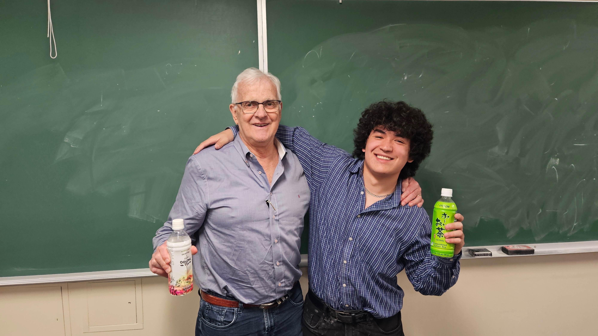
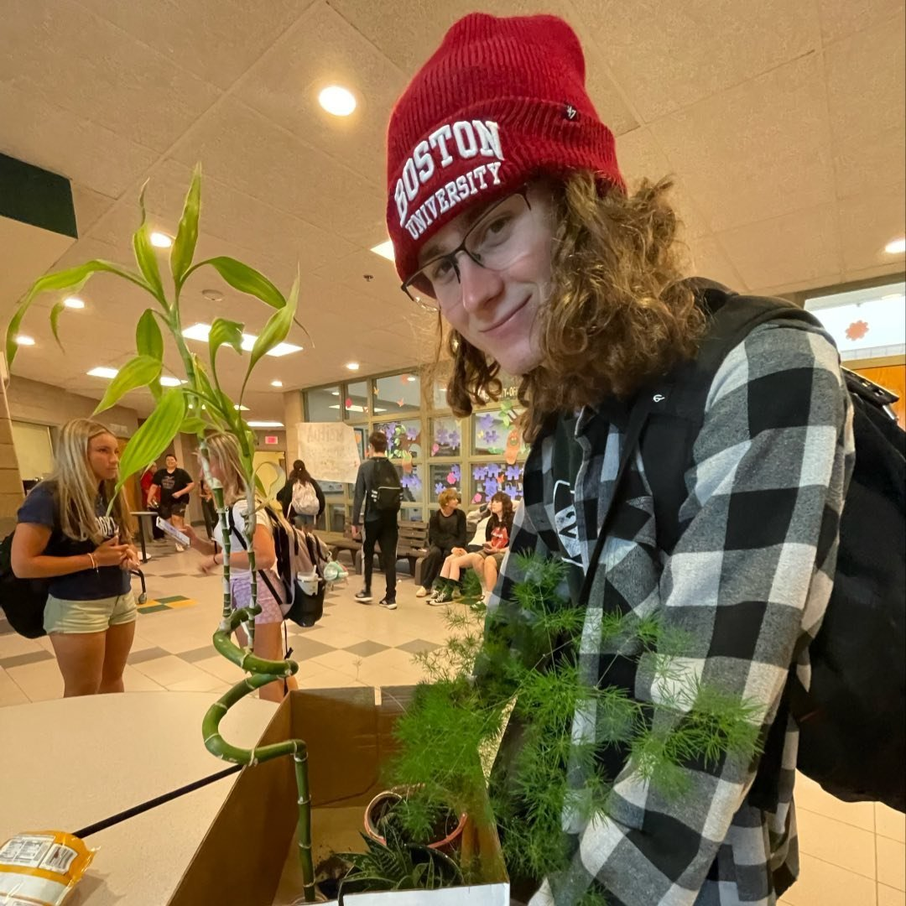
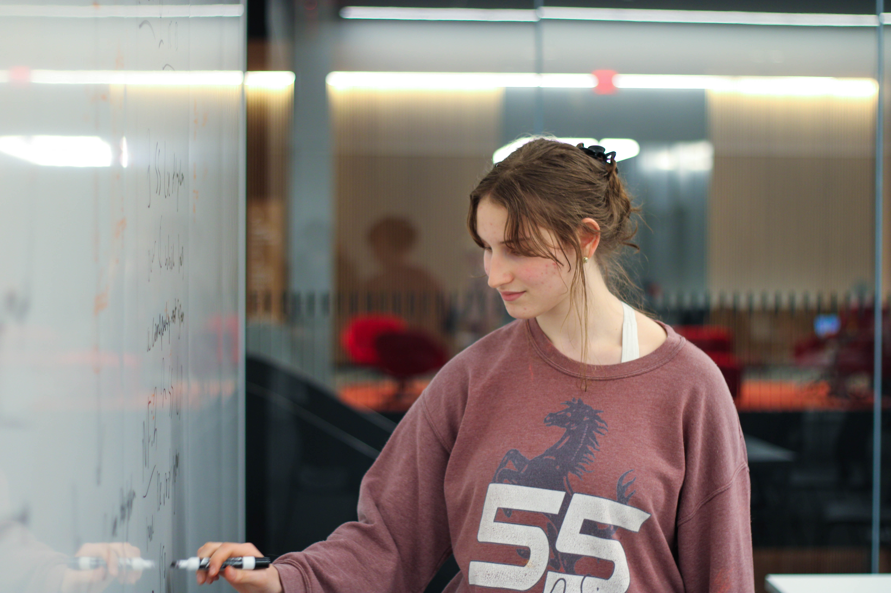

The Society of Mathematics
Current Leadership
Molly Roughan
President
Hello! My name is Molly, and I’m a Sophomore at Boston University majoring in Pure Mathematics. I love finding ways for others to experience the joys of math, in addition to doing so myself! Currently, I’m quite interested in combinatorics, algebra, graph theory, and anything involving those, but I love just about any kind of math I come across.
Outside of BU, I’m a mentor for middle- and high-schoolers interested in studying mathematics; I get to introduce them to upper-level mathematical thinking long before their college education. I aim to do the same for this club: to foster a love of learning math, beyond what you’re expected to learn in a classroom.
I’m always happy to chat, be it math-related, puzzle-related, or anything else, so please don’t hesitate to say hi! My email is mroughan@bu.edu.
Alex Balsera
Vice President
I’m a sophomore undergraduate student studying Physics and Math. I am vice president of the Society of Mathematics, so I organize the colloquium and weekly meetings. I’ve done some work in combinatorial geometry and mathematical physics, though I’m interested in most topics in mathematics. I love sharing ideas and meeting new people, and I hope to help keep SoM a welcoming community for both. My email is abalsera@bu.edu.

Joey Romano
Secretary
Hello! My name is Joey and I am a Sophomore studying Pure Mathematics and a Core minor. I am the secretary of the Society of Mathematics. I’m excited to talk about math with you all. You can reach me at josephro@bu.edu.
Cameron Keillor
Treasurer
My name is Cameron Keillor, I am from Traverse City Michigan. I am Currently a Junior majoring in Mathematics & Physics. Some of the things I like to do is Sailing, Skiing, Hiking, Reading, Photography, and Playing Piano. I am doing active research on Wada Basins in Nonlinear Systems. I particularly love pure mathematics, analysis, and topology. My email is keillorc@bu.edu.

Past Leadership
Skyler Marks
President
I'm Skyler, and I was the second president of the Society of Mathematics. I graduated from Boston University in '26, proceeding directly to a PhD at Boston College. I'm particularly interested in algebraic geometry, with a focus on solving classically flavored problems using scheme theory; I've recently enjoyed learning about surfaces, and look forward to learning about threefolds.
When I'm not doing math, I like to play guitar, read, and spend time outside (frankly, I like to do most of those things while doing math as well!) Please feel free to email me at skyler@skylermarks.com with questions or comments about math, or anything else you find interesting.

Zoe Siegelnickel
Vice President
Graduated from BU in Spring 2026. Currently Pursuing Master's Degree at Stony Brook University.

Zach Zobair
Head of the Colloquium
Starting at Duke in Fall of 2026 for a Ph.D. studying the Langlands program.

Iker Perez
Treasurer
Hey! I’m Iker, a Junior studying Mathematics, Computer Science, and Sociology at Boston University. You can reach me at isperez@bu.edu.